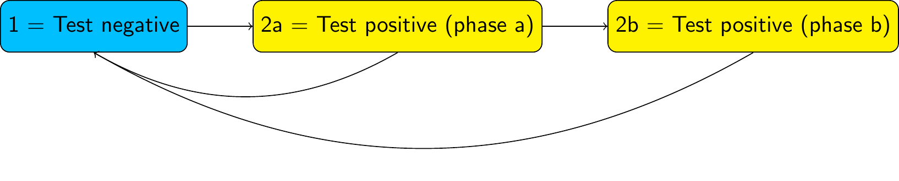

Advanced multi-state models in msmbayes
Christopher Jackson chris.jackson@mrc-bsu.cam.ac.uk
2024-04-09
Source:vignettes/advanced.Rmd
advanced.RmdPhase-type semi-Markov models
In a multi-state model, suppose we do not believe the sojourn time in a particular state follows an exponential distribution. For example, in the infection model, suppose we do not believe that the time spent in the “test positive” state is exponential.

We can relax this assumption by building a “semi-Markov” model, where the sojourn time in this state follows a more complex distribution. One way to do this is to replace this state by a series of two (or more) latent or hidden states, known as “phases”. For example, with two phases:

In a phase-type model, we allow progression from one phase to the next, but not transitions from later to earlier phases (or jumps between non-adjacent phases, if there are 3 phases or more). Otherwise, we allow the same transitions out of each phase as were allowed in the original model (to state 1, in this example)
We then assume transitions between and out of the phases follow exponential distributions. That is, we assume a Markov model on the latent state space. The test-positive state then has a sojourn distribution known as the “Coxian” phase-type distribution, instead of the exponential.
Note: This is an example of a hidden Markov model, though one of a specific form where some states are observed correctly, and some states are latent. Phase-type models are a convenient way to build semi-Markov models for intermittently-observed data, because there are standard algorithms for computing the likelihood of a hidden Markov model.
Fitting phase-type models in msmbayes
To assume a phase-type sojourn distribution for one or more states in
a msmbayes model, set the nphase argument.
This is a vector of length equal to the number of states, giving the
number of phases per state. Any elements of nphase that are
1 correspond to states with the usual exponential sojourn
distribution.
Example: data simulated from a standard Markov model
Here we extend the 2-state model for the simulated infection data to give state 2 (infection) a two-phase sojourn distribution. These data were originally simulated assuming an exponential sojourn distribution in state 2 (with rate 3). In this situation, we would expect the estimated rates of transition out of each phase to be identical.
Q <- rbind(c(0, 1),
c(1, 0))
draws <- msmbayes(infsim2, state="state", time="months", subject="subject",
Q=Q, nphase=c(1,2))
summary(draws)## # A tibble: 7 × 6
## name from to value prior rhat
## <chr> <chr> <chr> <rvar[1d]> <chr> <dbl>
## 1 q 1 2p1 0.99 ± 0.94 0.14 (0.0027, 6.7) 1.00
## 2 q 2p1 1 5.28 ± 6.17 0.14 (0.0027, 6.7) 1.00
## 3 q 2p1 2p2 2.67 ± 27.31 0.14 (0.0027, 6.7) 1.00
## 4 q 2p2 1 4.56 ± 15.89 0.14 (0.0027, 6.7) 1.00
## 5 mst 1 NA 1.45 ± 0.71 7.4 (0.148, 369) 1.00
## 6 mst 2p1 NA 0.21 ± 0.11 3.7 (0.074, 184) 1.00
## 7 mst 2p2 NA 17.63 ± 95.37 7.4 (0.148, 369) 1.00The phased states are labelled specially here, e.g. the first phase
of state 2 is labelled "2p1". The estimated transition
rates from the two phases of state 2 to state 1 are not significantly
different from 2 - but there is large uncertainty around the estimated
rates, since this model is over-fitted to the data. Implementing the
same model in msm would give extremely large confidence
intervals around the estimated rates.
Example: data simulated from a phase-type model
The following code simulates a dataset from the following phase-type model structure

with a transition intensity matrix (on the latent state space) given
in the R object Qg. This code uses the ability of the
function simmulti.msm() from the msm package
to simulate from hidden Markov models.
Qg <- rbind(c(0, 0.18, 0.008, 0.012),
c(0, 0, 0.016, 0.024),
c(0, 0, 0, 0.2),
c(0, 0, 0, 0))
E <- rbind(c(1,0,0,0), # hidden Markov model misclassification matrix
c(1,0,0,0),
c(0,1,0,0),
c(0,0,1,0))
nsubj <- 10000; nobspt <- 10
set.seed(1)
sim.df <- data.frame(subject = rep(1:nsubj, each=nobspt),
time = seq(0, 100, length=nobspt))
library(msm)
sim.df <- simmulti.msm(sim.df[,1:2], qmatrix=Qg, ematrix=E)We fit the phase-type model to the simulated data using both
msmbayes and msm.
The "pathfinder" variational inference algorithm is used
to approximate the Bayesian posterior. There are some warning messages
from using this algorithm in this example, so in practice we might have
wanted to cross-check the results with MCMC.
Q3 <- rbind(c(0,1,1),c(0,0,1),c(0,0,0))
draws <- msmbayes(data=sim.df, state="obs", time="time", subject="subject",
Q=Q3, nphase=c(2,1,1), fit_method="pathfinder")
bayesplot::mcmc_dens(draws, pars=sprintf("logq[%s]",1:6))The posterior distribution appears awkwardly shaped, with evidence of several local maxima or “saddle points”.
msm needs some tuning to converge, in particular the use
of fnscale and explicit initial values for the transition
rate. In practice, sensitivity analysis to these initial values would be
needed to confirm that the reported estimates are the global maximum
likelihood estimates, rather than one of the local maxima or saddle
points.
Q3 <- rbind(c(0,0.5,0.5),c(0,0,0.5),c(0,0,0))
s.msm <- msm(obs ~ time, subject=subject, data=sim.df, phase.states=1, qmatrix=Q3,
phase.inits=list(list(trans=0.05, # seems to need these
exit=matrix(rep(0.05,4),nrow=2,byrow=TRUE))),
control = list(trace=1,REPORT=1,fnscale=50000,maxit=10000))Reassuringly, the Bayesian and frequentist methods give similar estimates of the transition intensities, which agree (within estimation error) with the values used for simulation.
qmatrix(draws)## rvar<1000>[4,4] mean ± sd:
## [,1] [,2] [,3]
## [1,] -0.1800 ± 0.02771 0.1721 ± 0.02971 0.0048 ± 0.00261
## [2,] 0.0000 ± 0.00000 -0.0393 ± 0.00061 0.0160 ± 0.00057
## [3,] 0.0000 ± 0.00000 0.0000 ± 0.00000 -0.2006 ± 0.00578
## [4,] 0.0000 ± 0.00000 0.0000 ± 0.00000 0.0000 ± 0.00000
## [,4]
## [1,] 0.0030 ± 0.00197
## [2,] 0.0233 ± 0.00058
## [3,] 0.2006 ± 0.00578
## [4,] 0.0000 ± 0.00000
qmatrix.msm(s.msm,ci="none")## State 1 [P1] State 1 [P2] State 2 State 3
## State 1 [P1] -0.1986608 0.17706760 0.01059025 0.01100295
## State 1 [P2] 0.0000000 -0.03930873 0.01593401 0.02337472
## State 2 0.0000000 0.00000000 -0.20150880 0.20150880
## State 3 0.0000000 0.00000000 0.00000000 0.00000000
Qg## [,1] [,2] [,3] [,4]
## [1,] 0 0.18 0.008 0.012
## [2,] 0 0.00 0.016 0.024
## [3,] 0 0.00 0.000 0.200
## [4,] 0 0.00 0.000 0.000The mean sojourn times in states of a phase-type model can either be
calculated for the latent state space (by_phase=TRUE, the
default), or the observable state space
(by_phase=FALSE).
mean_sojourn(draws)## # A tibble: 3 × 2
## state value
## <chr> <rvar[1d]>
## 1 1p1 5.7 ± 0.89
## 2 1p2 25.4 ± 0.39
## 3 2 5.0 ± 0.14
mean_sojourn(draws, by_phase=FALSE) ## # A tibble: 3 × 2
## state value
## <int> <rvar[1d]>
## 1 1 30 ± 0.38
## 2 2 5 ± 0.14
## 3 3 Inf ± NaNMore practical experience of using these phase-type models is needed. In particular:
How to specify substantive prior information. In the examples above, the default log-normal(-2,2) priors were used for transition intensities. But we need a better way to choose these based on judgements about interpretable quantities, e.g. the mean sojourn time in the phased state.
Limited experience suggests that the Bayesian method is more likely than
msmto produce a plausible result without the need for tuning. However, can the sampling algorithms always be relied upon?How to build and interpret models with covariates on intensities. Covariates can be placed on intensities for transitions in the phased state-space, but this has not been tested in practice. There is a risk of over-fitting, and strong constraints on covariate effects are expected to be necessary.
Multi-state models with misclassification
Another application of hidden Markov models is to account for misclassification of states in a multi-state model.
To fit a misclassification multi-state models in
msmbayes, the structure of allowed misclassifications is
supplied in the E argument (the “e” stands for “emission”).
This is a matrix with off-diagonal entries:
1 if true state [row number] can be misclassified as [column number]
0 if true state [row number] cannot be misclassified as [column number]
The diagonal entries of E are ignored (as for the
Q argument).
The following example is discussed in the msm
user guide (Section 2.14). We model progression between three states
of CAV (a disease experienced by heart transplant recipients), and allow
death from any of these states. True state 1 can be misclassified as 2,
true state 2 can be misclassified as 1 or 3, and true state 3 can be
misclassified as 2.
For speed in this demo, we use Stan’s "optimize" method,
which simply determines the posterior mode, and no other posterior
summaries.
Qcav <- rbind(c(0, 1, 0, 1),
c(0, 0, 1, 1),
c(0, 0, 0, 1),
c(0, 0, 0, 0))
Ecav <- rbind(c(0, 1, 0, 0),
c(1, 0, 1, 0),
c(0, 1, 0, 0),
c(0, 0, 0, 0))
draws <- msmbayes(data=cav, state="state", time="years", subject="PTNUM",
Q=Qcav, E=Ecav, fit_method="optimize")
qmatrix(draws)## rvar<1>[4,4] mean ± sd:
## [,1] [,2] [,3] [,4]
## [1,] -0.145 ± NA 0.099 ± NA 0.000 ± NA 0.047 ± NA
## [2,] 0.000 ± NA -0.263 ± NA 0.200 ± NA 0.064 ± NA
## [3,] 0.000 ± NA 0.000 ± NA -0.364 ± NA 0.364 ± NA
## [4,] 0.000 ± NA 0.000 ± NA 0.000 ± NA 0.000 ± NAThe function edf extracts the misclassification (or
“emission”) probabilities in a tidy data frame form.
edf(draws)## # A tibble: 4 × 3
## from to value
## <int> <int> <rvar[1d]>
## 1 1 2 0.0081 ± NA
## 2 2 1 0.2380 ± NA
## 3 2 3 0.0513 ± NA
## 4 3 2 0.1120 ± NAAn identical non-Bayesian model is fitted using
msm().
Note: this is different from the model fitted in the
msmmanual, since “exact death times” are not supported inmsmbayes. Also note thatmsmrequires informative initial values for the non-zero intensities and misclassification probabilities here. For hidden Markov models,msmis not smart enough to determine good initial values automatically given the transition structure.
Qcav <- rbind(c(0, 0.148, 0, 0.0171), c(0, 0, 0.202, 0.081),
c(0, 0, 0, 0.126), c(0, 0, 0, 0))
Ecav <- rbind(c(0, 0.1, 0, 0),c(0.1, 0, 0.1, 0),
c(0, 0.1, 0, 0),c(0, 0, 0, 0))
cav.msm <- msm(state ~ years, subject=PTNUM, data=cav, qmatrix=Qcav, ematrix=Ecav)
qmatrix.msm(cav.msm, ci="none")## State 1 State 2 State 3 State 4
## State 1 -0.1452746 0.09855669 0.0000000 0.04671790
## State 2 0.0000000 -0.26352026 0.2013230 0.06219724
## State 3 0.0000000 0.00000000 -0.3671024 0.36710242
## State 4 0.0000000 0.00000000 0.0000000 0.00000000
ematrix.msm(cav.msm, ci="none")## State 1 State 2 State 3 State 4
## State 1 0.9919222 0.008077811 0.00000000 0
## State 2 0.2379674 0.710858571 0.05117404 0
## State 3 0.0000000 0.112813389 0.88718661 0
## State 4 0.0000000 0.000000000 0.00000000 1The parameter estimates from msm are close to those from
msmbayes, with any differences explainable by the influence
of the weak prior.